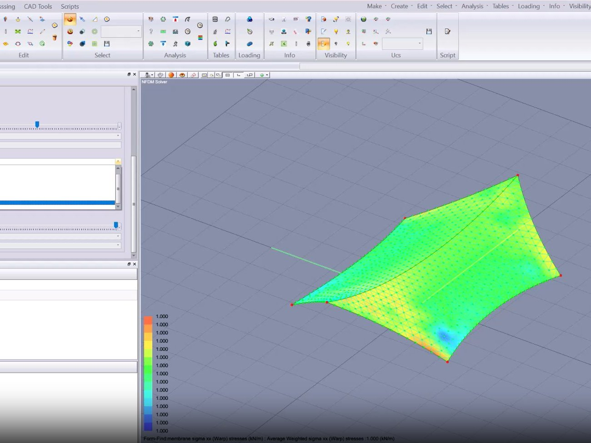

01 · ANALYSIS

Analysis · Form-finding
Membrane form-finding analysis
Non-linear form-finding study of a tensile membrane structure. Surface tension distribution and anchor reactions resolved iteratively to produce a buildable geometry suitable for fabrication and rigging design.
Software FEM Tools
Code AS/NZS 1170